23树的一种删除方法
似乎网上没有什么对于23树删除时候的教程
即使是有的那些也是躲躲闪闪，不讲个明白，本文尽我最大的可能将这个操作讲明白（最后还是鸽了
不同于本人的别的blog，这次本人花巨资画了示意图（
但是这个blog别人也看不到呀（（
参考资料
挺可惜的是这篇2-3树有两种删除时候的情况没有讨论，可能是太简单了吧（
删除
分析大纲
为了保证排版我用缩进简单介绍一下思路
删除的是非叶子结点
删除的是叶子结点
删除的是3type结点
删除的是2type结点
2type结点的父亲是2type结点
2type结点的兄弟是2type结点
2type结点的兄弟是3type结点
2type结点的父亲是3type结点
2type结点存在一个兄弟是2type结点
2type结点存在一个兄弟是3type结点
首先我们要删除一个结点的话。
我们要找到那个结点在哪里。
我们首先根据删除结点的情况进行分类。
-
要删除的结点不是叶子结点
-
要删除的结点是叶子结点
删除的不是叶子结点
这时候我们找到这个结点的后继，然后把后继的值和要删除结点的值swap一下。
然后只需要删除后继就好了。
那...为什么要这么做呢，一来这样依旧能够保证整棵树的中序遍历的正确性。
此外这个结点的后继一定是一个叶子！我们接下来就来证明这个结论。
一个非叶子结点的后继一定是一个叶子
如果你学过其他的种类的平衡树的话，你会发现这个性质是一般平衡树所没有的。
例如
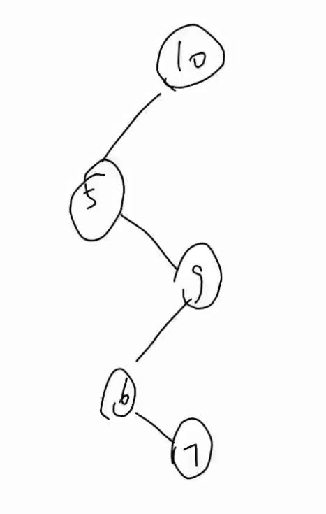
其中5结点的后继6就不是一个叶子
原因在于5的后继可能有右儿子，但是在2-3树中保证了除叶子节点外，每个分支节点的儿子数量是满的，于是意味着一个结点一旦有儿子，则一定有很多儿子，这个它是一个后继相矛盾，可以自己想想。
一个非叶子结点的后继一定在右儿子中
这个也是普通平衡树所没有的性质。
举个栗子。
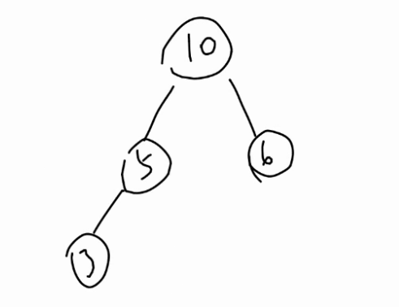
考虑5的后继，显然得到了后继不一定在右儿子中的结论。
由于2-3保证了所有分支结点一定有多个儿子，于是证明显然。
有了以上两条性质的保证。我们就可以知道经过上面两个步骤，一个删除非叶子结点的操作，被转化成了一个删除叶子结点的操作。
删除的是叶子结点
于是本质上只有删除的是叶子结点的操作。
我们考虑接着来分析问题
删除的是3type结点
由于这个叶子结点有多个值，直接删掉那个，然后把这个结点改成2type结点就好了。
举个栗子。 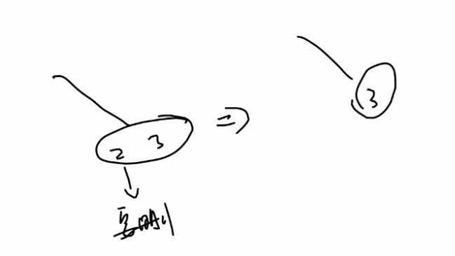
删除的是2type结点
这个时候我们肯定不能直接把这个结点删了，不然树就不一样高了。
于是我们只能寻求它的父亲或者兄弟的帮助。
继续进行分类讨论
- 2type结点的父亲是3type结点
- 2type结点的父亲是2type结点
2type结点的父亲是2type结点 且有一个3type兄弟
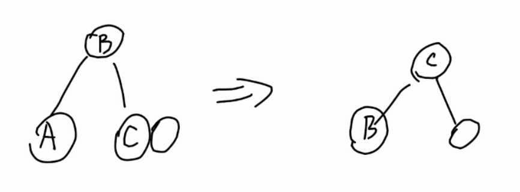
其中A代表被删除的叶子，这样调整一下顺序就完成了调整过程。
2type结点的父亲是2type结点 且有一个2type兄弟
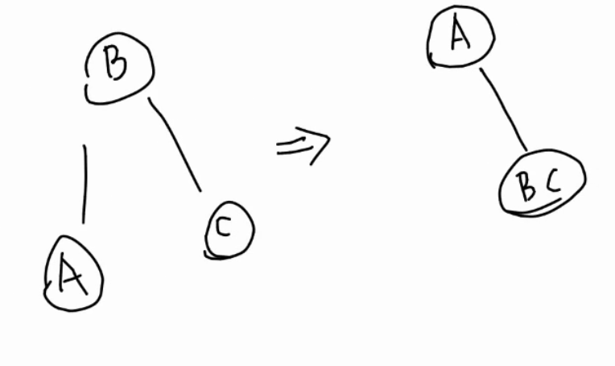
A是要被删除的结点，经过这样的调整，把A拉到了最上面，但是并没有完全处理完成，需要继续向上递归，不过我们先完成对删除叶子一步的操作，之后我们再统一讨论如果递归地处理。
2type结点的父亲是3type结点 且有一个兄弟是2type结点
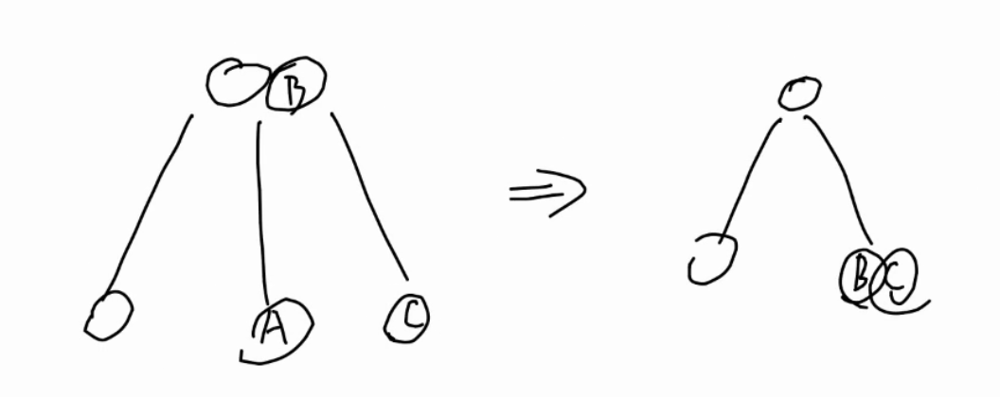
删除A结点，只需要将B和C压成一个结点并且把父亲变成2type就好了，再次注意这里A是个叶子，A是子树的情况之后再讨论
2type结点的父亲是3type结点 且有一个兄弟是3type结点
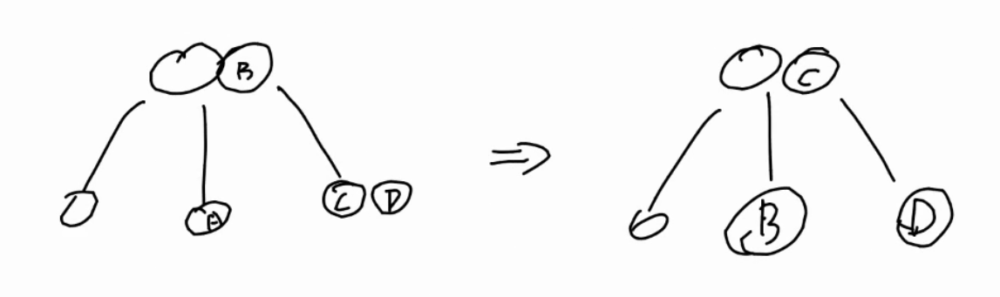
思路类似在此不再赘述。
对于递归处理的讨论
可以发现对于删除A这个叶子的一步操作中只有2type结点的父亲是2type结点 且有一个2type兄弟这种情况下，我们必须要进行向上递归处理。
观察这个时候，向上处理时\(A\)是一颗子树，且之后一个儿子，这个性质非常关键。
事实上下面的讨论与上面的讨论的区别就在于，被删除的结点A从一个叶子，变成了一个只有一个儿子的且根为A的子树的根。
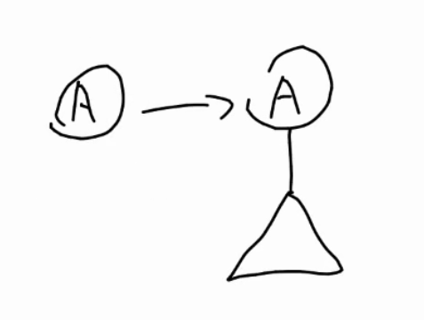
递归时A也会遇到
- 2type结点的父亲是2type结点 且有一个3type兄弟
- 2type结点的父亲是2type结点 且有一个2type兄弟
- 2type结点的父亲是3type结点 且有一个兄弟是2type结点
- 2type结点的父亲是3type结点 且有一个兄弟是3type结点
这4种情况
2type结点的父亲是2type结点 且有一个3type兄弟
由于现在A不再是叶子了，于是讨论要加上子树。
调整如图
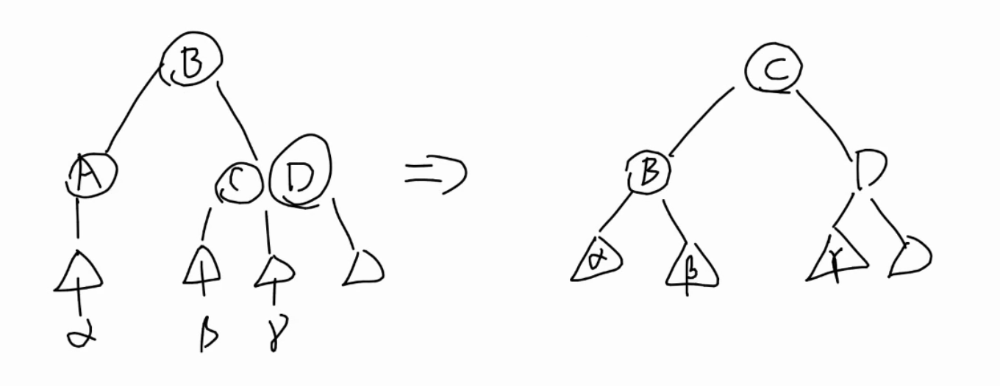
2type结点的父亲是2type结点 且有一个2type兄弟
调整方式如下，可以发现这种情况下还需要继续向上递归
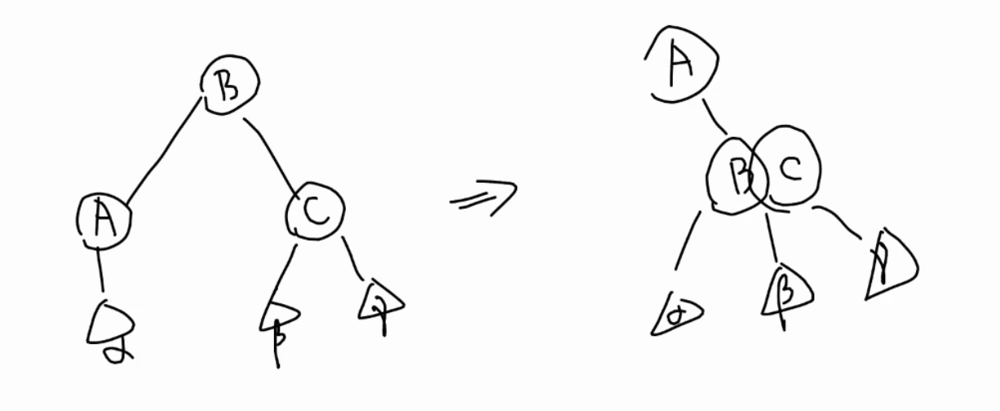
2type结点的父亲是3type结点 且有一个兄弟是2type结点
调整方式如下
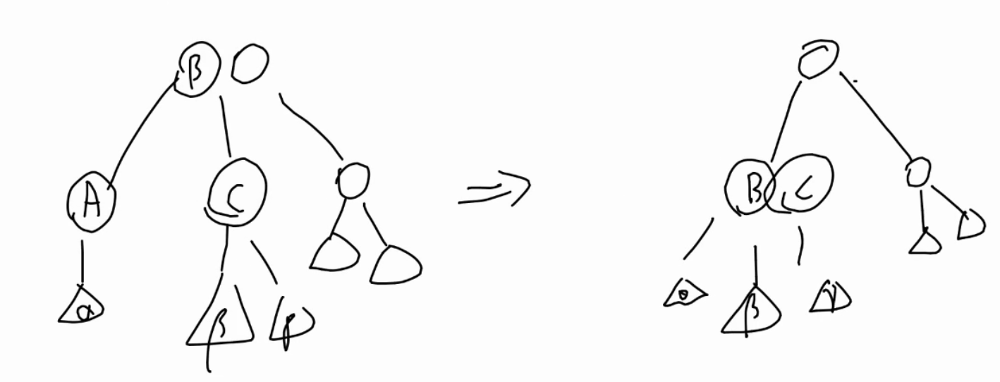
2type结点的父亲是3type结点 且有一个兄弟是3type结点
调整方法如下
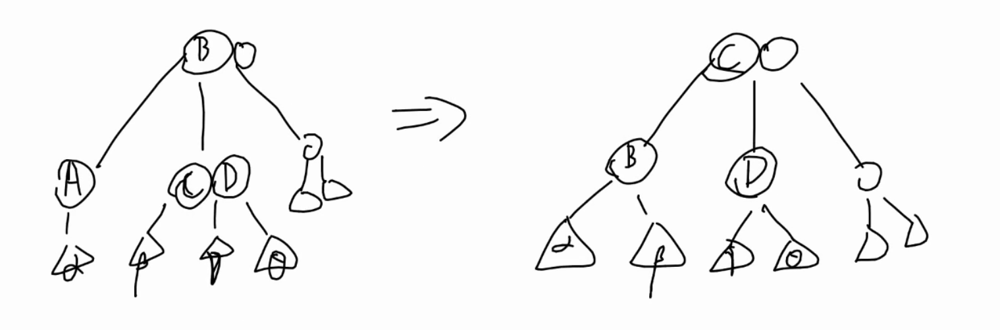
综合以上3种情况，可以发现还是只有一种情况需要继续向上递归，这时依旧满足子书中只有一个儿子，于是可以继续上面的过程
最终要么终止于没有父亲，要么终止于其他3种情况
递归过程中没有父亲
这时需要重新指定整个2-3树的根
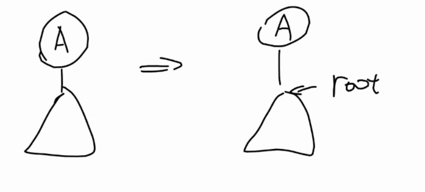
完结散花（
贴个代码吧
#include <iostream>
#include <algorithm>
#include <cassert>
using namespace std;
template<typename T>
class _23Tree{
private:
struct Node{
Node *ch[4], *fa;
T data[3];
unsigned int height;
bool isThree;
};
Node *createNode();
Node *root;
void maintain(Node *x);
void erase_maintain(Node *);
void _display(Node *x);
Node *_find(T);
public:
_23Tree();
unsigned int getHeight()const;
void insert(T);
void erase(T);
bool find(T);
void display();
};
template<typename T>
_23Tree<T>::_23Tree(){
root = nullptr;
}
template<typename T>
typename _23Tree<T>::Node *_23Tree<T>::createNode(){
Node *t = new Node();
// clear node
for(int i = 0; i < 3; i++)t->ch[i] = nullptr;
t->fa = nullptr;
t->height = 0;
t->isThree = false;
return t;
}
template<typename T>
void _23Tree<T>::maintain(_23Tree<T>::Node *x){
// maintain for a single tree
// whose father is to be inserted
// initially x's father exists
Node *y = x->fa;
if(y->isThree){
// when x's father is 3-type
//find the loc
int ch_loc = 0;
for(int i = 0; i < 3 ; i++){
if(y->ch[i] == x) {
ch_loc = i;
break;
}
}
//insert the pointers into y
for(int i = 3; i > ch_loc; i--){
y->ch[i] = y->ch[i - 1];
}
y->ch[ch_loc] = x->ch[0];
y->ch[ch_loc+1] = x->ch[1];
for(int i = 0 ; i < 4; i++){
y->ch[i]->fa = y;
}
//insert data into y
y->data[2] = x->data[0];
sort(y->data, y->data+3);
//split y
Node *tmp = createNode();
Node *p1 = createNode();
Node *p2 = createNode();
tmp->data[0] = y->data[1];
p1->data[0] = y->data[0];
p2->data[0] = y->data[2];
p1->ch[0] = y->ch[0];
p1->ch[1] = y->ch[1];
p2->ch[0] = y->ch[2];
p2->ch[1] = y->ch[3];
p1->fa = p2->fa = tmp;
p1->ch[0]->fa = p1->ch[1]->fa = p1;
p2->ch[0]->fa = p2->ch[1]->fa = p2;
tmp->ch[0] = p1;
tmp->ch[1] = p2;
p1->height = p2->height = y->height;
tmp->height = p1->height + 1;
// exchange y's father
Node *z = y->fa;
tmp->fa = z;
if(z == nullptr){
root = tmp;
}else{
int child_size = z->isThree ? 3 : 2;
for(int i=0;i<child_size ;i++){
if(z->ch[i] == y){
child_size = i;
break;
}
}
z->ch[child_size] = tmp;
delete y;
maintain(tmp);
}
}else{
// when x's father is 2-type
y->isThree = true;
//find the loc
int ch_loc = 0;
for(int i = 0; i < 2; i++){
if(y->ch[i] == x){
ch_loc = i;
break;
}
}
ch_loc ^= 1;
// insert the pointer into y
if(ch_loc == 0){
y->ch[1] = x->ch[0];
y->ch[2] = x->ch[1];
}else{
y->ch[2] = y->ch[1];
y->ch[0] = x->ch[0];
y->ch[1] = x->ch[1];
}
for(int i=0;i<3;i++){
y->ch[i]->fa = y;
}
//insert the data into y
y->data[1] = x->data[0];
std::sort(y->data, y->data+2);
delete x;
}
}
template<typename T>
unsigned int _23Tree<T>::getHeight()const{
return root->height;
}
template<typename T>
void _23Tree<T>::insert(T x){
Node *cur = root;
if(cur == nullptr){
root = createNode();
root->data[0] = x;
return;
}
Node *y = cur;
while(cur != nullptr){
int R = cur->isThree ? 2 : 1;
int i;
for(i = 0; i < R; i++){
if(cur -> data[i] < x){
// break;
}else{
break;
}
}
// i = min(i, R-1);
y = cur;
cur = cur->ch[i];
}
if(y->isThree){
//insert new node
y->data[2] = x;
std::sort(y->data, y->data+3);
// cur is y's father
cur = y->fa;
// split 4-type node
Node *tmp = createNode();
Node *p1 = createNode();
Node *p2 = createNode();
p1->data[0] = y->data[0];
tmp->data[0] = y->data[1];
p2->data[0] = y->data[2];
tmp->ch[0] = p1;
tmp->ch[1] = p2;
p1->fa = tmp;
p2->fa = tmp;
tmp->height = 1;
tmp->fa = y->fa;
//exchange cur's son to the new 3 node
//when father is nullptr
if(cur == nullptr){
root = tmp;
delete y;
return;
}
//when father exists
int child_size = (cur->isThree ? 3 : 2);
for(int i = 0; i < child_size; i++){
if(cur -> ch[i] == y){
child_size = i;
break;
}
}
cur->ch[child_size] = tmp;
tmp->fa = cur;
delete y;
//update recursively
maintain(tmp);
}else{
y->data[1] = x;
std::sort(y->data, y->data+2);
y->isThree = true;
}
}
template<typename T>
void _23Tree<T>::erase(T v) {
Node *x = _find(v);
if(x == nullptr) return;
if(x->ch[0] == nullptr){
// x is leaf
if(x->isThree){
int child_size = x->isThree ? 2 : 1;
x->isThree = false;
int loc = 0;
for(loc = 0; loc < child_size; loc++){
if(x->data[loc] != v)break;
}
swap(x->data[loc], x->data[0]);
x->data[1] = T{};
}else{
erase_maintain(x);
}
}else{
// x is not leaf
int loc = 0;
int child_size = x->isThree ? 2 : 1;
for(loc = 0; loc < child_size; loc ++){
if(x->data[loc] == v)break;
}
assert(loc < child_size);
// find next in InOrder
Node *y = x->ch[loc + 1];
while(y->ch[0] != nullptr)
y = y->ch[0];
x->data[loc] = y->data[0];
if(y->isThree){
int child_size = y->isThree ? 2 : 1;
y->isThree = false;
swap(y->data[1], y->data[0]);
y->data[1] = T{};
}else{
erase_maintain(y);
}
}
}
template<typename T>
bool _23Tree<T>::find(T v) {
return (_find(v) != nullptr);
}
template<typename T>
void _23Tree<T>::display() {
_display(root);
}
template<typename T>
void _23Tree<T>::_display(_23Tree::Node *x) {
// cout << x << endl;
if(x == nullptr) return;
int child_size = x->isThree ? 2 : 1;
//son list
_display(x->ch[0]);
for(int i=0;i<child_size;i++){
cout << x->data[i] << " " << x->height << endl;
_display(x->ch[i+1]);
}
}
template<typename T>
typename _23Tree<T>::Node *_23Tree<T>::_find(T v) {
Node *x = this->root;
while(x != nullptr){
int child_size = x->isThree ? 2 : 1;
bool flag = false;
for(int i=0;i<child_size;i++){
if(x->data[i] == v)flag = true;
}
if(flag) break;
int i = 0;
for(i=0;i<child_size;i++){
if(v < x->data[i])break;
}
x = x->ch[i];
}
return x;
}
template<typename T>
void _23Tree<T>::erase_maintain(_23Tree::Node *x) {
int child_size = x->isThree ? 2 : 1;
// x is 2-type node
Node *y = x->fa;
if(y == nullptr){
// when father doesn't exist
root = x->ch[1];
}else{
// when father exists
//find x's location in y
child_size = y->isThree ? 2 : 1;
int loc = -1;
for(int i=0; i<= child_size; i++){
if(y->ch[i] == x){
loc = i;
break;
}
}
assert(loc != -1);
if(y -> isThree){
// father is 3-type node
int to = 0;
if(loc == 0)to = 1;
if(loc == 1)to = 2;
if(loc == 2)to = 1;
Node *w = y->ch[to];
if(w->isThree){
if(loc == 0){
if(x->ch[0] == nullptr) x->ch[0] = x->ch[1];
x->data[0] = y->data[0];
y->data[0] = w->data[0];
w->data[0] = w->data[1];
w->data[1] = T{};
w->isThree = false;
x->ch[1] = w->ch[0];
for(int i=0;i<=1;i++)w->ch[i] = w->ch[i+1];
w->ch[2] = nullptr;
if(x->ch[1]!=nullptr)x->ch[1]->fa = x;
}else if(loc == 1){
if(x->ch[0] == nullptr) x->ch[0] = x->ch[1];
x->data[0] = y->data[1];
y->data[1] = w->data[0];
w->data[0] = w->data[1];
w->data[1] = T{};
w->isThree = false;
x->ch[1] = w->ch[0];
for(int i=0;i<=1;i++)w->ch[i] = w->ch[i+1];
w->ch[2] = nullptr;
if(x->ch[1]!=nullptr)x->ch[1]->fa = x;
}else{
if(x->ch[1] == nullptr) x->ch[1] = x->ch[0];
x->data[0] = y->data[1];
y->data[1] = w->data[1];
w->data[1] = T{};
w->isThree = false;
x->ch[0] = w->ch[2];
w->ch[2] = nullptr;
if(x->ch[0]!=nullptr)x->ch[0]->fa = x;
}
}else{
if(loc == 0){
w->isThree = true;
w->data[1] = w->data[0];
w->data[0] = y->data[0];
y->data[0] = y->data[1];
y->data[1] = T{};
y->isThree = false;
for(int i=0;i<=1;i++)y->ch[i] = y->ch[i+1];
y->ch[2] = nullptr;
for(int i=1;i>=0;i--)w->ch[i+1] = w->ch[i];
w->ch[0] = x->ch[0]==nullptr ? x->ch[1] : x->ch[0];
for(int i=0;i<=2;i++)if(w->ch[i]!=nullptr)w->ch[i]->fa = w;
delete x;
}else if(loc == 1){
w->isThree = true;
w->data[1] = w->data[0];
w->data[0] = y->data[1];
y->data[1] = T{};
y->isThree = false;
y->ch[1] = y->ch[2];
y->ch[2] = nullptr;
for(int i=1;i>=0;i--)w->ch[i+1] = w->ch[i];
w->ch[0] = x->ch[0]==nullptr ? x->ch[1] : x->ch[0];
for(int i=0;i<=2;i++)if(w->ch[i]!=nullptr)w->ch[i]->fa = w;
delete x;
}else{
w->isThree = true;
w->data[1] = y->data[1];
y->data[1] = T{};
y->isThree = false;
y->ch[2] = nullptr;
w->ch[2] = x->ch[0]==nullptr ? x->ch[1] : x->ch[0];
for(int i=0;i<=2;i++)if(w->ch[i]!=nullptr)w->ch[i]->fa = w;
delete x;
}
}
}else{
// father is 2-type node
Node* w = y->ch[loc^1];
if(w->isThree){
w->isThree = false;
if(loc == 1){
x->data[0] = y->data[0];
y->data[0] = w->data[1];
w->data[1] = T{};
if(x->ch[1] == nullptr) x->ch[1] = x->ch[0];
x->ch[0] = w->ch[2];
w->ch[2] = nullptr;
if(x->ch[0] != nullptr)x->ch[0]->fa = x;
}else{
x->data[0] = y->data[0];
y->data[0] = w->data[0];
w->data[0] = w->data[1];
w->data[1] = T{};
if(x->ch[0] == nullptr) x->ch[0] = x->ch[1];
x->ch[1] = w->ch[0];
w->ch[0] = w->ch[1];
w->ch[1] = w->ch[2];
w->ch[2] = nullptr;
if(x->ch[1] != nullptr)x->ch[1]->fa = x;
}
}else{
w->isThree = true;
w->data[1] = y->data[0];
//y->data[0] = 20000526;
sort(w->data, w->data+2);
if(x->ch[0] == nullptr) x->ch[0] = x->ch[1];
if(loc == 0){
w->ch[2] = w->ch[1];
w->ch[1] = w->ch[0];
w->ch[0] = x->ch[0];
if(w->ch[0] != nullptr)w->ch[0]->fa = w;
}else{
w->ch[2] = x->ch[0];
if(w->ch[2] != nullptr)w->ch[2]->fa = w;
}
y->ch[loc] = nullptr;
delete x;
erase_maintain(y);
}
}
}
}
int data[100000];
int main(int argc, char **argv){
// freopen("1.txt","w",stdout);
srand(0);
_23Tree<int> x;
int n = 20;
for(int i=1;i<=n;i++)
data[i] = i;
random_shuffle(data+1, data+1+n);
for(int i=1;i<=n;i++){
x.insert(data[i]);
}
for(int i=1;i<=n/4;i++){
x.erase(data[i]);
cout << "erase " << data[i] << endl;
// x.display();
}
x.display();
cout << x.getHeight() << endl;
return 0;
}